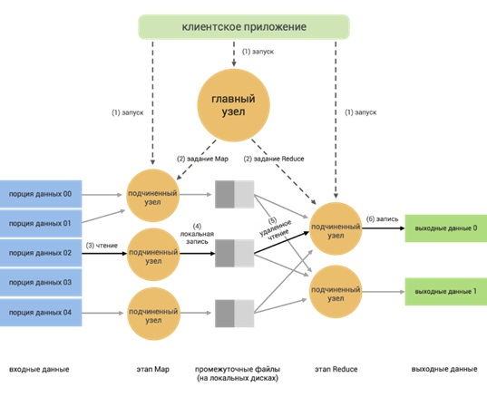
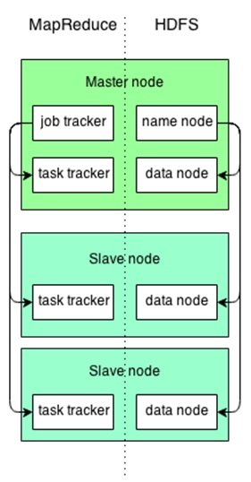
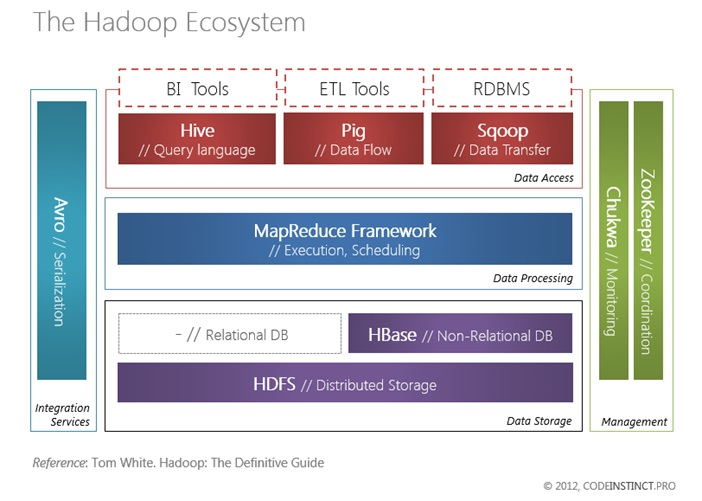
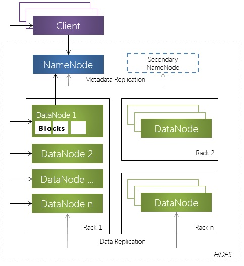

Архитектура Hadoop, экосистема Hadoop. Архитектура ядра Hadoop, основные компоненты. Использование PIG, HIVE в Hadoop. HDFS. Обработка данных с использованием Storm.
Hadoop – это программная платформа (Software Framework) построения распределенных приложений для массово-параллельной обработки (Massive Parallel Processing, MPP) данных.
На февраль 2012 года проект Apache Hadoop включает в себя 3 подпроекта:
Hadoop Common: библиотеки и сценарии управления распределенной обработкой, файловой системой, развертывания инфраструктуры;
Hadoop Distributed File System: распределенная файловая система, которая обеспечивает высокоскоростной доступ к данным приложения;
Hadoop MapReduce: программная платформа для распределенной обработки больших объемов данных на вычислительном кластере.
К основным техническим характеристикам платформы Hadoop относят:
Масштабируемость: платформа масштабируется линейно и позволяет хранить и обрабатывать петабайты данных;
Устойчивость к сбоям: все хранящиеся данные избыточны, все проваленные задания по обработке данных перезапускаются;
Кроссплатформенность: библиотеки Hadoop написаны (в основном) на Java, и могут выполняться в любой операционной системе, поддерживающей JVM (Java VM);
Автоматическое распараллеливание выполнения задачи: Hadoop создает «чистые» абстракции для разработчиков, снимая с них работу по планированию, контролю и агрегатированию результатов параллельной обработки данных.
Архитектура ядра Hadoop, основные компоненты
Apache Hadoop — это фреймворк для обработки больших объемов данных. Он предоставляет абстракции позволяющие разработчикам не беспокоиться о многих типичных проблемах распределенных вычислений. Hadoop берет на себя распределение подзадач по узлам и сбор результатов. Благодаря встроенному дублированию данных, он может относительно легко продолжать работу в случае сбоев, когда отдельные узлы ломаются или становятся недоступными по причине сетевых проблем. Другими словами, Hadoop освобождает разработчиков от необходимости изобретать велосипед при проведении распределенных вычислений.
Два основных компонента Hadoop:
MapReduce — распределенные вычисления,
HDFS — распределенная файловая система.

Рассмотрим архитектуру и принципы работы Hadoop MapReduсе более подробно.
Архитектура MapReduce построена по принципу «главный — подчиненные» (master — workers). В качестве главного выступает сервер JobTracker, раздающий задания подчиненным узлам кластера и контролирующий их выполнение.
Обработка данных подразделяется на следующие этапы:
Запуск приложения: передача кода приложения на главный (master) и подчиненные узлы (workers);
Мастер назначает конкретные задачи (Map или Reduce) и распределяет части входных данных по вычислительным узлам (workers);
Map-узлы читают назначенные им входные данные и начинают их обработку;
Map-узлы локально сохраняют промежуточные результаты: каждый узел сохраняет полученный результат на локальные диски;
Reduce-узлы читают промежуточные данные с Map-узлов и выполняют Reduce обработку данных;
Reduce-узлы сохраняют итоговые результаты в выходные файлы, обычно в HDFS.
HDFS (Hadoop Distributed File System) — это другая часть фреймворка Hadoop, его файловая система. Она спроектирована так, чтобы быть масштабируемой и поддерживать хранение очень больших объемов данных. Она устойчива к сбоям, позволяет делать откаты состояний и эффективно работает с MapReduce. Hadoop переносит вычисления к данным и минимизирует нагрузку на сеть.
Узел в Hadoop может быть главным (master node) и подчиненным (slave node). На главном узле находятся компоненты: JobTracker, NameNode, TaskTracker и DataNode. На подчиненном узле мгут быть только TaskTracker and DataNode. JobTracker берет входящие MapReduce задачи и распределяет их между TaskTraker-ами. NameNode поддерживает индекс данных. Он предоставляет информацию о том где найти определенные данные и направляет запрос к соответствующему DataNodes.

Экосистема платформы Hadoop
Центральное место экосистемы Hadoop занимает хранилище данных (Data Storage). Hadoop поддерживает хранение как неструктурированных данных с распределенной файловой системе HDFS, так и структурированных данных в нереляционной базе данных HBase.

Фреймворк MapReduce отвечает за планирование задач (Job Scheduling) и выполнение распределенных вычислений.
Делать запросы к хранящимся на Hadoop-кластере наборам данных с помощью следующих инструментов, входящих в экосистему Hadoop: Pig, Hive (имеет свой SQL -подобный язык запросов HiveQL). Для передачи большого количества данных, хранящихся на кластере Hadoop, и хранилищами структурированных данных, такие как, реляционные базы данных, разработан инструмент Sqoop.
Компоненты, относящейся к взаимодействию (Integration Services), управлению (Management), отвечающие за доступ к данным (Data Access), а также нереляционная БД HBase представлены отдельными проектами Apache Foundation (часто верхнего уровня). Подробную информацию о них можно узнать в соответствующих разделах сайта Apache Software Foundation.
Одним из ключевых компонентов платформы Hadoop является файловая система HDFS.
Hadoop Distributed File System (HDFS) - распределенная файловая система, которая обеспечивает высокоскоростной доступ к данным приложения.
Концепции и структура HDFS
HDFS является иерархической файловой системой. Таким образом, в HDFS имеется поддержка вложение каталогов. В каталоге может располагаться ноль или более файлов, а также любое количество подкаталогов.
HDFS состоит из следующих обязательных компонентов:
Узел имен (NameNode) – программный код, выполняющийся, в общем случае, на выделенной машине экземпляра HDFS и отвечающий за файловые операции (работу с метаданными);
Узел данных (DataNode) – программный код, как правило, выполняющийся выделенной машине экземпляра HDFS и отвечающий за операции уровня файла (работа с блоками данных).

Использование PIG, HIVE в Hadoop
Итак, начнем с Hive. Его основная фишка — это SQL-подобный язык запросов HQL (Hive query language). Он позволяет работать с данными привычным нам способом, так, как если бы мы работали с обычной реляционной базой. Скрипты можно запускать как через консоль, так и с помощью командной строки.
Hive это:
SQL-подобный язык HQL
Интерактивная консоль
Встроенные функции агрегации
Поддержка пользовательских функций (UDF)
Данные — как таблица
Hive умеет работать:
с текстовыми файлами (можно задать разграничительный символ)
с сжатыми текстовыми файлами (Gzip, Bzip)
с массивами, словарями, объединениями (union)
имеет огромное количество встроенных функций для работы с: коллекциями, датами, строками, JSON-ми
с математическими функциями (округление, логарифмы, корни, тригонометрия)
с функциями агрегации (sum, min, max, avg...)
Если всего перечисленного выше не хватило, то можно использовать кастомные функции, а также мэпперы и редьюсеры (python, java)
Hive плюсы:
Старый, добрый SQL — хорош для описания выборок. Да и просто все его знают.
MapReduce под капотом. Уходит много оверхеда, связанного с обвязкой вокруг MR. Описание моделей данных, входных и выходных форматов, цепочек MR задач.
Интерактивность. Хорош для анализа данных в разных срезах.
Быстрота разработки
Отсутствие зависимостей, компиляции, сборки (всё это скрыто)
Hive Минусы:
Не всё можно уложить в парадигму HQL
Это хорошо ложится в голову, при простых выборках. Но с ростом сложности становится всё труднее и труднее их понимать. Особенно если выборку писали не вы
Поговорим теперь о Pig. Он основан на процедурном языке Pig Latin. Чтобы в нем разобраться нужно потратить какое то время.
Давайте разберемся и походу выясним отличия от Hive
Pig это:
язык Pig Latin
Интерактивная консоль
Встроенные функции агрегации
Поддержка пользовательских функций (UDF)
Данные — в виде структур (Tuple, Bag)
Pig умеет работать:
с текстовыми файлами (можно задать разграничительный символ)
с сжатыми текстовыми файлами (Gzip, Bzip)
с массивами, словарями, объединениями (union)
имеет огромное количество встроенных функций для работы с: коллекциями, датами, строками, JSON-ми
с математическими функциями (округление, логарифмы, корни, тригонометрия)
с функциями агрегации (sum, min, max, avg...)
Если всего перечисленного выше не хватило, то можно использовать кастомные функции, а также мэпперы и редьюсеры (python, java)
Как видите, Pig умеет всё то же, что и Hive. Отличие лишь в представлении данных и в языке. Но именно это отличие выводит работу с Pig совершенно на другой уровень.
Данный фреймфорк работает со специальными структурами данных — Tuple и Bag.
Tuple — упорядоченный набор полей. Структура, к полям которой можно обращаться по индексу и/или имени.
Bag — коллекция (множество) Tuple.
Pig плюсы:
Процедурный подход. Упорядоченность! Язык позволяет разбивать логику на блоки, каждый шаг можно развернуто описывать комментариями.
Формирование MapReduce под капотом. Уходит много оверхеда, связанного с обвязкой вокруг MR. Описание моделей данных, входных и выходных форматов, цепочек MR задач.
Интерактивность. Хорош для анализа данных в разных срезах.
Быстрота разработки. Отсутствие зависимостей, сборки
Pig Минусы:
Не всё можно уложить в язык Pig Latin
Pig Latin вместе со структурами данных более сложен, в отличии от HQL
Для UDF используется Jython. Это может ограничить в использовании некоторых библиотек.
Nearreal-time системы обработки данных (Storm, Spark)
Storm - система, ориентированная на распределенную обработку больших потоков данных в реальном времени. Storm работает не со статическими данными, а с потоковыми, которые поступают непрерывно.
Storm ― это вычислительная система без хранения данных. Это позволяет использовать Storm в различных контекстах независимо от того, поступают ли данные динамически из нетрадиционных источников или хранятся в базе данных.
Ключевые особенности Storm
Масштабируемость. Задачи обработки распределяются по узлам кластера и потокам на каждом узле
Гарантированная защита от потери данных.
Простота развертывания и сопровождения
Восстановление после сбоев. (Если сбой - переадресуются на другие обработчики.)
Возможность написания компонентов не только на Java. ( за счет json объектов)
Элементы Storm:
Tuple - Элемент представления данных. По умолчанию может содержать Long, Integer, Short, Byte, String, Double, Float, Boolean и byte[] поля. Пользовательские типы должны быть сериализуемыми.
Stream - Последовательность из Tuple.
Spout - Поставщик данных для Stream. Получает данные из внешних источников, формирует из них Tuple и отправляет в Stream. Может отправлять Tuple в несколько разных Stream.
Bolt - Обработчик данных. На вход поступают Tuple. На выход отправляет 0 или более Tuple.
Topology - Совокупность элементов с описанием их взаимосвязи. Осуществляет транспорт Tuple между элементами Spout и Bolt.
Примеры задач: использования Storm в Twitter - получение информации о тенденциях. Twitter извлекает новые тенденции из потока твитов и отслеживает их на местном и национальном уровне. Это означает, что как только история зарождается, алгоритм поиска тенденций в темах Twitter обнаруживает ее. Этот алгоритм реального времени реализован в Storm как система непрерывного анализа данных Twitter.
Apache Spark представляет собой систему организации параллельной обработки данных, написанную на языке программирования Scala. Spark обрабатывает данные, хранящиеся в оперативной памяти.
Архитектура: Фреймворк состоит из четырех функциональных модулей, работающих в пределах одного кластера данных.
1 - SparkSQL – дает возможность интеграции SQL-запросов со всеми без исключения элементами фреймворка.
2 - SparkStreaming, позволяет пользователю писать и запускать приложения на Scala и Java в потоковом режиме. Приложение сможет одновременно работать как с потоками данных, так и осуществлять пакетную обработку.
3 – библиотека машинного обучения MLib
4 - GraphX для работы с графами и графо-параллельных вычислений.
Видео материалы